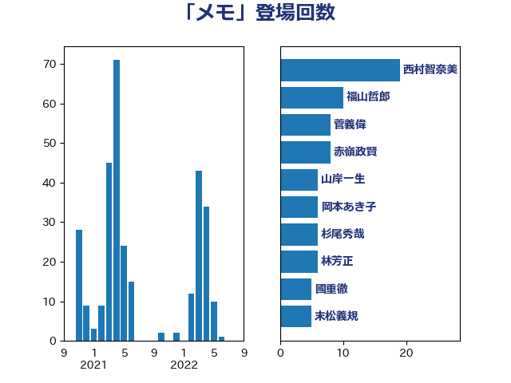

単語「メモ」

| 西村智奈美 | 立憲民主党 | 19 回 |
| 福山哲郎 | 立憲民主党 | 10 回 |
| 菅義偉 | 自由民主党 | 8 回 |
| 赤嶺政賢 | 日本共産党 | 8 回 |
| 山岸一生 | 立憲民主党 | 6 回 |
| 岡本あき子 | 立憲民主党 | 6 回 |
| 杉尾秀哉 | 立憲民主党 | 6 回 |
| 林芳正 | 自由民主党 | 6 回 |
| 國重徹 | 公明党 | 5 回 |
| 末松義規 | 立憲民主党 | 5 回 |
| 田村智子 | 日本共産党 | 5 回 |
| 笠井亮 | 日本共産党 | 5 回 |
| 新藤義孝 | 自由民主党 | 4 回 |
| 梅村みずほ | 日本維新の会 | 4 回 |
| 伊波洋一 | 無所属 | 3 回 |
| 大串博志 | 立憲民主党 | 3 回 |
| 小池晃 | 日本共産党 | 3 回 |
| 山添拓 | 日本共産党 | 3 回 |
| 磯崎仁彦 | 自由民主党 | 3 回 |
| 足立康史 | 日本維新の会 | 3 回 |
| 鎌田さゆり | 立憲民主党 | 3 回 |
| 中山展宏 | 自由民主党 | 2 回 |
| 宮本岳志 | 日本共産党 | 2 回 |
| 山崎誠 | 立憲民主党 | 2 回 |
| 打越さく良 | 立憲民主党 | 2 回 |
| 本村伸子 | 日本共産党 | 2 回 |
| 森山浩行 | 立憲民主党 | 2 回 |
| 田村まみ | 国民民主党 | 2 回 |
| 福島伸享 | 無所属 | 2 回 |
| 芳賀道也 | 国民民主党 | 2 回 |
| 茂木敏充 | 自由民主党 | 2 回 |
| 西田昌司 | 自由民主党 | 2 回 |
| 辻元清美 | 立憲民主党 | 2 回 |
| 中川郁子 | 自由民主党 | 1 回 |
| 井上哲士 | 日本共産党 | 1 回 |
| 井出庸生 | 自由民主党 | 1 回 |
| 伊藤孝江 | 公明党 | 1 回 |
| 勝部賢志 | 立憲民主党 | 1 回 |
| 吉田はるみ | 立憲民主党 | 1 回 |
| 吉田統彦 | 立憲民主党 | 1 回 |
| 吉良州司 | 無所属 | 1 回 |
| 國場幸之助 | 自由民主党 | 1 回 |
| 塩川鉄也 | 日本共産党 | 1 回 |
| 奥野総一郎 | 立憲民主党 | 1 回 |
| 安江伸夫 | 公明党 | 1 回 |
| 宮本徹 | 日本共産党 | 1 回 |
| 寺田学 | 立憲民主党 | 1 回 |
| 寺田静 | 無所属 | 1 回 |
| 小沼巧 | 立憲民主党 | 1 回 |
| 小西洋之 | 立憲民主党 | 1 回 |
| 山下芳生 | 日本共産党 | 1 回 |
| 末松信介 | 自由民主党 | 1 回 |
| 本庄知史 | 立憲民主党 | 1 回 |
| 橋本聖子 | 無所属 | 1 回 |
| 櫻井周 | 立憲民主党 | 1 回 |
| 江田憲司 | 立憲民主党 | 1 回 |
| 海江田万里 | 立憲民主党 | 1 回 |
| 渡辺周 | 立憲民主党 | 1 回 |
| 田村貴昭 | 日本共産党 | 1 回 |
| 石垣のりこ | 立憲民主党 | 1 回 |
| 石橋林太郎 | 自由民主党 | 1 回 |
| 石橋通宏 | 立憲民主党 | 1 回 |
| 福島みずほ | 社会民主党 | 1 回 |
| 稲田朋美 | 自由民主党 | 1 回 |
| 紙智子 | 日本共産党 | 1 回 |
| 落合貴之 | 立憲民主党 | 1 回 |
| 蓮舫 | 立憲民主党 | 1 回 |
| 藤岡隆雄 | 立憲民主党 | 1 回 |
| 藤田文武 | 日本維新の会 | 1 回 |
| 谷田川元 | 立憲民主党 | 1 回 |
| 近藤和也 | 立憲民主党 | 1 回 |
| 逢坂誠二 | 立憲民主党 | 1 回 |
| 進藤金日子 | 自由民主党 | 1 回 |
| 野田佳彦 | 立憲民主党 | 1 回 |
| 金子恭之 | 自由民主党 | 1 回 |
| 長妻昭 | 立憲民主党 | 1 回 |
| 長浜博行 | 無所属 | 1 回 |
| 階猛 | 立憲民主党 | 1 回 |
| 青山繁晴 | 自由民主党 | 1 回 |
| 高橋千鶴子 | 日本共産党 | 1 回 |
| 麻生太郎 | 自由民主党 | 1 回 |